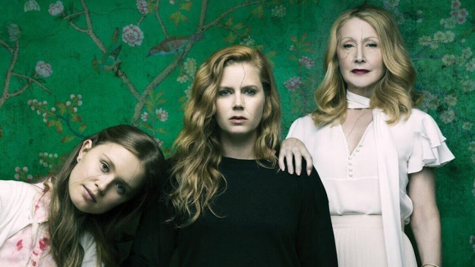

Inside the life of a curious 20s-something doodling, writing, and wandering about New York City
October 1, 2018
Sharp Objects (G. Flynn)
A parent is a child’s first teacher and probably biggest influencer, regardless of whether we as children actively strive to follow in their footsteps or whether we stubbornly avoid any remote association to them. The apple does not fall very far from the tree.
Sharp Objects tells a thrilling, dark, and defiant story about the strong impact parents have on children and the particular scenario of that impact being disastrously damaging due to intensifying generations of psychological impairment. Author Gillian Flynn focuses specifically on motherhood. She challenges the broadly accepted idea that women are innately good and selfless — natural nurturers — by “giving women permission to be bad,” as an individual and as a mother. In the sheltered, snow-globe-turned-ghost-town of Wind Gap where most nice women are teachers or mothers, a woman was the last to be suspected of being the serial killer of two young girls in tragic and ruthless murders. After extensively investigating the cases and blindly pursuing male suspects, Wind Gap police and residents refused to acknowledge what could’ve been a deception all along.
Flynn stresses that being a good mother is not often as portrayed. Contrary to popular belief, it is not a skill that reliably kicks in or is awakened upon the welcoming of a child. Sometimes, it doesn’t kick in fully or at all. Not every women will understand or learn how to care for a child in a healthy way and also, not every women will make that conscious decision to do so. There are a variety of reasons why a mother may be challenged in her abilities to care for her child. Sharp Objects raises awareness of a less common and easily undetectable mental disorder called Munchausen syndrome by proxy. Children who are victims of MSP endure a constant lifetime of abuse from their caretakers for the illusion of being an attentive and doting parent. These parents intentionally sabotage children’s health by causing fake medical problems for their own emotional gratifications. It’s sick. It’s sad. It’s puzzling, but it happens, and it’s interesting to discuss and a great problem to shine a scrutinizing spotlight on.
September 7, 2018
South of the Border, West of the Sun (H. Murakami)

2018 has been a continuation of the Haruki Murakami craze that started last year with Colorless Tsukuru Tazaki and His Years of Pilgrimage and Kafka on the Shore. They were my first exposure to both his contemporary, realistic fiction works and his insane, magical realism adventures. This year, I started with What I Talk About When I Talk About Running, then moved onto Norwegian Wood, and now most recently, South of the Border, West of the Sun.
It is broadly known that Murakami's books tend to feature similar themes, with similar characters and similar imageries. Without fail, South of the Border, West of the Sun also features a confused, introspective central Japanese male character, who is plagued by a childhood love of the past. He is a small-town boy, who eventually moves to Tokyo, enjoys swimming, listening to records, and frequenting jazz clubs, and his lover is a mysterious woman, who has a quiet and enticing beauty, never manages to connect with anyone else, and eventually develops suicidal thoughts.
Unlike his other books though, Murakami deeply explores in this one the ideas of infidelity, selfishness, and choices and consequences. One of the first traits he introduces about our main characters, Hajime and Shimamoto, is that they are both the only child in their families, something uncommon during their upbringing in post-war Japan. Only children are viewed as outcasts, spoiled and standoffish, while children with siblings are open and less self-centered. While this bonds our two leads, it also isolates them from their surroundings and additionally attempts to justify the way Hajime treats the other females he encounters, which his wife Yukiko later calls him out for. Despite how he betrays his first girlfriend to sleep with her cousin or how he betrays his loving wife and daughters to chase Shimamoto, Hajime continuously plays the victim, because to him, he is a tormented soul struggling to find his own identity and to re-invent himself. As good as his intentions may be, he can't escape the ghosts of his past or the uncontrollable forces that come with it. While he is remorseful of his actions, Yukiko needs to call him out explicitly for his oversight and dismissal of other people in his life to remind him that he is not the only one dealing with demons.
"The last few weeks, I really did think I would die... That's how lonely and sad I was... You didn't know that, did you? You have never seriously given it any thought, have you? What I was feeling, what I was thinking, what I might do... You don't understand a thing."
"Most likely I don't." I said.
"And you don't ask anything," she said.
I opened my mouth to say something, but the words wouldn't come out. She was right: I never did ask her anything. Why didn't I? I had no idea.
Though Yukiko reassures us that it's not about right or wrong, I still enjoyed the way Murakami juxtaposes what society deems is the moral code against the irresistible magnetism of natural desires, while simultaneously battling all this against the passage of time, the accumulation of missed opportunities, and the inevitability of death and change. Murakami's writing is always a treat and I look forward to reading The Wind-Up Bird Chronicle before taking a hiatus from his work.